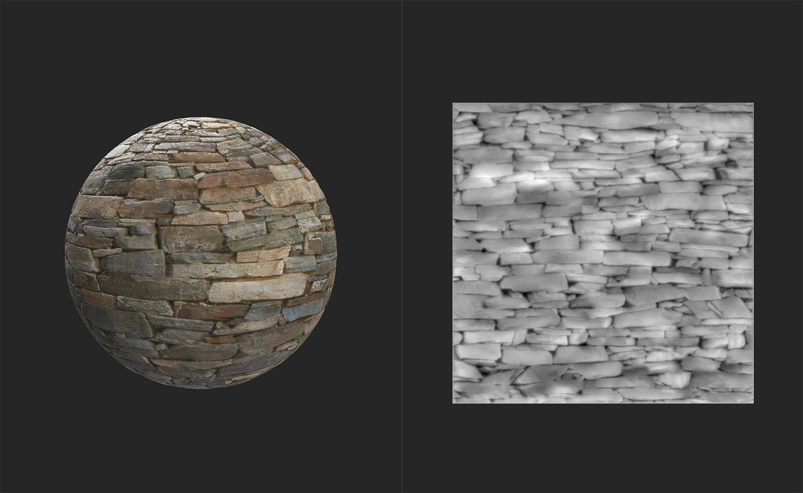
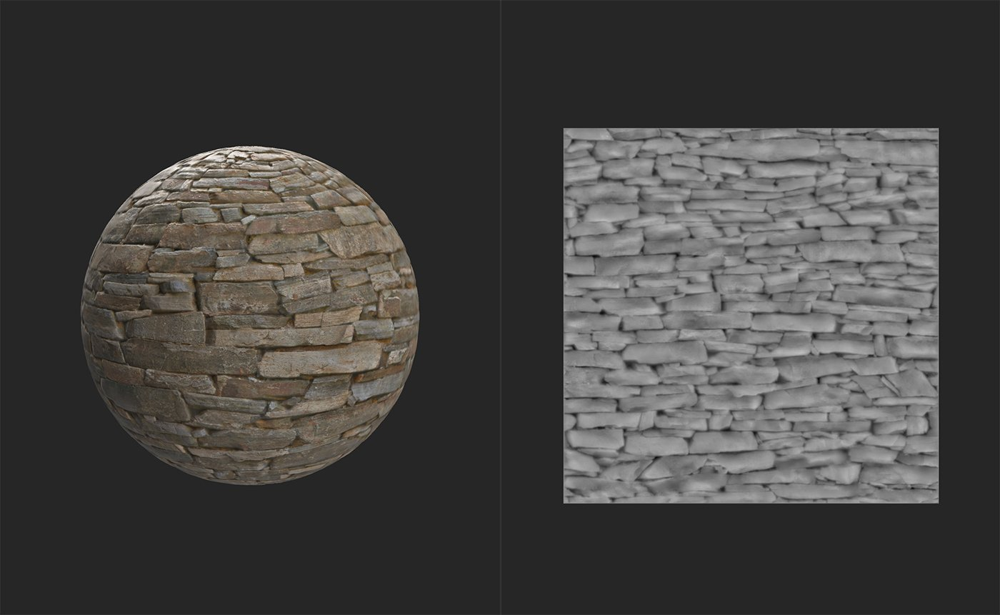

In: Adjustments
The Equalize filter adjusts local contrast based on a distance range. The goal of the Equalize filter is to reduce large differences in each channel. As a result, it's generally useful as part of the Image to Material (B2M) workflow - the Image to Material (AI powered) filter includes an Equalize pass within the filter to improve results.
The images below show the Equalize filter in action.

Before the Equalize filter has been added, there is significant variation across the height map and base color of this material.

After the Equalize filter has been added, both the height map and base color channels are more uniform without losing detail.
Basic parameters
Channel
The controls for each channel work the same way.
Mask